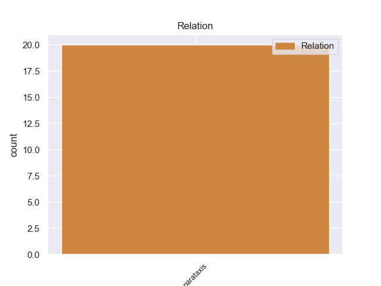
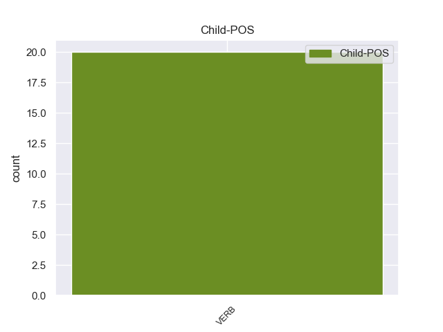

Distribution of features within this leaf



Agreement Rules sorted by frequency.
- When the dependent token is the parataxis(parataxis) of the head token, and the head token is VERB and the dependent token is VERB.
1 They _ _ _ _ 0 _ _ _
2 promised promise VERB VBD Mood=Ind|Tense=Past|VerbForm=Fin 0 _ _ _
3 it _ _ _ _ 0 _ _ _
4 'd _ _ _ _ 0 _ _ _
5 be _ _ _ _ 0 _ _ _
6 done _ _ _ _ 0 _ _ _
7 within _ _ _ _ 0 _ _ _
8 an _ _ _ _ 0 _ _ _
9 hour _ _ _ _ 0 _ _ _
10 , _ _ _ _ 0 _ _ _
11 so _ _ _ _ 0 _ _ _
12 I _ _ _ _ 0 _ _ _
13 waited wait VERB VBD Mood=Ind|Tense=Past|VerbForm=Fin 2 parataxis 2:parataxis _
14 in _ _ _ _ 0 _ _ _
15 the _ _ _ _ 0 _ _ _
16 lobby _ _ _ _ 0 _ _ _
17 . _ _ _ _ 0 _ _ _
Disagree Examples:
1 I _ _ _ _ 0 _ _ _
2 just _ _ _ _ 0 _ _ _
3 wanted want VERB VBD Mood=Ind|Tense=Past|VerbForm=Fin 0 _ _ _
4 Sue _ _ _ _ 0 _ _ _
5 to _ _ _ _ 0 _ _ _
6 hear _ _ _ _ 0 _ _ _
7 ( _ _ _ _ 0 _ _ _
8 she _ _ _ _ 0 _ _ _
9 enjoys enjoy VERB VBZ Mood=Ind|Number=Sing|Person=3|Tense=Pres|VerbForm=Fin 3 parataxis 3:parataxis _
10 utility _ _ _ _ 0 _ _ _
11 bashing _ _ _ _ 0 _ _ _
12 so _ _ _ _ 0 _ _ _
13 much _ _ _ _ 0 _ _ _
14 ) _ _ _ _ 0 _ _ _
15 . _ _ _ _ 0 _ _ _
1 The _ _ _ _ 0 _ _ _
2 CSIS _ _ _ _ 0 _ _ _
3 report _ _ _ _ 0 _ _ _
4 cites cite VERB VBZ Mood=Ind|Number=Sing|Person=3|Tense=Pres|VerbForm=Fin 0 _ _ _
5 numerous _ _ _ _ 0 _ _ _
6 areas _ _ _ _ 0 _ _ _
7 where _ _ _ _ 0 _ _ _
8 Iran _ _ _ _ 0 _ _ _
9 has _ _ _ _ 0 _ _ _
10 funded _ _ _ _ 0 _ _ _
11 modernization _ _ _ _ 0 _ _ _
12 including _ _ _ _ 0 _ _ _
13 the _ _ _ _ 0 _ _ _
14 most _ _ _ _ 0 _ _ _
15 troublesome _ _ _ _ 0 _ _ _
16 aspect _ _ _ _ 0 _ _ _
17 , _ _ _ _ 0 _ _ _
18 anti-shipping _ _ _ _ 0 _ _ _
19 cruise _ _ _ _ 0 _ _ _
20 missiles _ _ _ _ 0 _ _ _
21 : _ _ _ _ 0 _ _ _
22 ' _ _ _ _ 0 _ _ _
23 Iran _ _ _ _ 0 _ _ _
24 has _ _ _ _ 0 _ _ _
25 obtained obtain VERB VBN Tense=Past|VerbForm=Part 4 parataxis 4:parataxis _
26 new _ _ _ _ 0 _ _ _
27 anti-ship _ _ _ _ 0 _ _ _
28 missiles _ _ _ _ 0 _ _ _
29 and _ _ _ _ 0 _ _ _
30 missile _ _ _ _ 0 _ _ _
31 patrol _ _ _ _ 0 _ _ _
32 craft _ _ _ _ 0 _ _ _
33 from _ _ _ _ 0 _ _ _
34 China _ _ _ _ 0 _ _ _
35 , _ _ _ _ 0 _ _ _
36 midget _ _ _ _ 0 _ _ _
37 submarines _ _ _ _ 0 _ _ _
38 from _ _ _ _ 0 _ _ _
39 North _ _ _ _ 0 _ _ _
40 Korea _ _ _ _ 0 _ _ _
41 , _ _ _ _ 0 _ _ _
42 submarines _ _ _ _ 0 _ _ _
43 from _ _ _ _ 0 _ _ _
44 Russia _ _ _ _ 0 _ _ _
45 , _ _ _ _ 0 _ _ _
46 and _ _ _ _ 0 _ _ _
47 modern _ _ _ _ 0 _ _ _
48 mines _ _ _ _ 0 _ _ _
49 . _ _ _ _ 0 _ _ _
50 ' _ _ _ _ 0 _ _ _
51 " _ _ _ _ 0 _ _ _
1 Edit _ _ _ _ 0 _ _ _
2 : _ _ _ _ 0 _ _ _
3 Also _ _ _ _ 0 _ _ _
4 I _ _ _ _ 0 _ _ _
5 forgot forget VERB VBD Mood=Ind|Tense=Past|VerbForm=Fin 0 _ _ _
6 to _ _ _ _ 0 _ _ _
7 mention _ _ _ _ 0 _ _ _
8 earlier _ _ _ _ 0 _ _ _
9 , _ _ _ _ 0 _ _ _
10 most _ _ _ _ 0 _ _ _
11 ( _ _ _ _ 0 _ _ _
12 if _ _ _ _ 0 _ _ _
13 not _ _ _ _ 0 _ _ _
14 all _ _ _ _ 0 _ _ _
15 ) _ _ _ _ 0 _ _ _
16 cruise _ _ _ _ 0 _ _ _
17 ships _ _ _ _ 0 _ _ _
18 also _ _ _ _ 0 _ _ _
19 practice practice VERB VBP Mood=Ind|Tense=Pres|VerbForm=Fin 5 parataxis 5:parataxis _
20 lifeboat _ _ _ _ 0 _ _ _
21 drills _ _ _ _ 0 _ _ _
22 weekly _ _ _ _ 0 _ _ _
23 , _ _ _ _ 0 _ _ _
24 and _ _ _ _ 0 _ _ _
25 it _ _ _ _ 0 _ _ _
26 is _ _ _ _ 0 _ _ _
27 not _ _ _ _ 0 _ _ _
28 uncommon _ _ _ _ 0 _ _ _
29 to _ _ _ _ 0 _ _ _
30 see _ _ _ _ 0 _ _ _
31 them _ _ _ _ 0 _ _ _
32 to _ _ _ _ 0 _ _ _
33 actually _ _ _ _ 0 _ _ _
34 launch _ _ _ _ 0 _ _ _
35 the _ _ _ _ 0 _ _ _
36 lifeboats _ _ _ _ 0 _ _ _
37 into _ _ _ _ 0 _ _ _
38 the _ _ _ _ 0 _ _ _
39 water _ _ _ _ 0 _ _ _
40 as _ _ _ _ 0 _ _ _
41 part _ _ _ _ 0 _ _ _
42 of _ _ _ _ 0 _ _ _
43 their _ _ _ _ 0 _ _ _
44 drill _ _ _ _ 0 _ _ _
45 when _ _ _ _ 0 _ _ _
46 you _ _ _ _ 0 _ _ _
47 are _ _ _ _ 0 _ _ _
48 in _ _ _ _ 0 _ _ _
49 port _ _ _ _ 0 _ _ _
50 . _ _ _ _ 0 _ _ _
1 I _ _ _ _ 0 _ _ _
2 was _ _ _ _ 0 _ _ _
3 told _ _ _ _ 0 _ _ _
4 to _ _ _ _ 0 _ _ _
5 leave _ _ _ _ 0 _ _ _
6 a _ _ _ _ 0 _ _ _
7 restaurant _ _ _ _ 0 _ _ _
8 because _ _ _ _ 0 _ _ _
9 I _ _ _ _ 0 _ _ _
10 ordered order VERB VBD Mood=Ind|Tense=Past|VerbForm=Fin 0 _ _ _
11 water _ _ _ _ 0 _ _ _
12 with _ _ _ _ 0 _ _ _
13 my _ _ _ _ 0 _ _ _
14 meal _ _ _ _ 0 _ _ _
15 ( _ _ _ _ 0 _ _ _
16 apparently _ _ _ _ 0 _ _ _
17 this _ _ _ _ 0 _ _ _
18 is _ _ _ _ 0 _ _ _
19 " _ _ _ _ 0 _ _ _
20 washing wash VERB VBG Tense=Pres|VerbForm=Part 10 parataxis 10:parataxis _
21 down _ _ _ _ 0 _ _ _
22 " _ _ _ _ 0 _ _ _
23 your _ _ _ _ 0 _ _ _
24 food _ _ _ _ 0 _ _ _
25 " _ _ _ _ 0 _ _ _
26 ) _ _ _ _ 0 _ _ _
27 and _ _ _ _ 0 _ _ _
28 not _ _ _ _ 0 _ _ _
29 ordering _ _ _ _ 0 _ _ _
30 wine _ _ _ _ 0 _ _ _
31 . _ _ _ _ 0 _ _ _
1 Boutique _ _ _ _ 0 _ _ _
2 stores _ _ _ _ 0 _ _ _
3 dealing _ _ _ _ 0 _ _ _
4 in _ _ _ _ 0 _ _ _
5 children _ _ _ _ 0 _ _ _
6 's _ _ _ _ 0 _ _ _
7 clothing _ _ _ _ 0 _ _ _
8 / _ _ _ _ 0 _ _ _
9 gifts _ _ _ _ 0 _ _ _
10 are _ _ _ _ 0 _ _ _
11 often _ _ _ _ 0 _ _ _
12 outrageously _ _ _ _ 0 _ _ _
13 priced price VERB VBN Tense=Past|VerbForm=Part 0 _ _ _
14 ( _ _ _ _ 0 _ _ _
15 who _ _ _ _ 0 _ _ _
16 wants want VERB VBZ Mood=Ind|Number=Sing|Person=3|Tense=Pres|VerbForm=Fin 13 parataxis 13:parataxis _
17 to _ _ _ _ 0 _ _ _
18 pay _ _ _ _ 0 _ _ _
19 40 _ _ _ _ 0 _ _ _
20 dollars _ _ _ _ 0 _ _ _
21 for _ _ _ _ 0 _ _ _
22 a _ _ _ _ 0 _ _ _
23 newborn _ _ _ _ 0 _ _ _
24 onesie _ _ _ _ 0 _ _ _
25 ? _ _ _ _ 0 _ _ _
26 ) _ _ _ _ 0 _ _ _